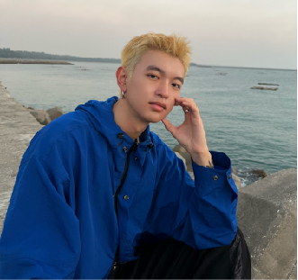

主⾓⾝上關於性和變裝癖好及戀母情節，想傳達情感的純粹、感情的依賴和託付，探索三⼈因寂寞⽽索求的關係，讓觀眾藉此思考愛的本質。
播放
劇情簡介
劇情大綱
年輕斯⽂的阿瑋，與配偶⾧期處於冷感，看似與⼀般⼈沒兩樣，他卻有著難⾔之隱的秘密， 喜歡偷竊⼥性內⾐。已年近半百的美豔性⼯作者秋萍，在⼀⽇發現阿瑋正在⾏竊她的貼⾝⾐物時，秋萍只是像獵物般靜靜的看著。⾯對⽣活中的寂寞，在這次狩獵中，誰才是真正的狩獵者? 。
角色介紹
郭歷瑋 (阿瑋)
性別：男，35 歲，上班族。
⾝⾼/體重：176cm/55kg
⾓⾊特質：⾻瘦如柴，孤僻，陰柔
從⼩母親過分的憐愛造成阿瑋成⼈後依然過度依戀，尋找結婚對象時按照母親的標準，母親過世後與筱雯的夫妻感情不融洽，結識秋萍後彷彿認識了⽣命中的救贖。
許秋萍(秋萍)
性別：⼥，54 歲，從事⾊情⾏業 。
⾝⾼/體重：162cm/52kg
⾓⾊特質：
樣貌俏麗，⾝材豐腴，妝髮誇張，⼤⼤咧咧。
貪圖榮華的性⼯作者，喜歡吃秋萍，曾經被深愛的男⼈劈腿過，現單⾝。
陳筱雯(筱雯)
性別：⼥，35 歲，家庭主婦 。
⾝⾼/體重：165cm/50kg
⾓⾊特質： ⾧髮，苗條，溫柔賢淑，對美滿家庭有憧憬。
經相親結識阿瑋，與他結婚後成為全職家庭主婦。但婚後阿瑋冷淡態度， 她努⼒維持家庭安穩，卻徒勞無功。
陳育傑（傑哥）
性別：男，58 歲，嫖客。
⾝⾼/體重：168cm/80kg
⾓⾊特質：已婚，秋萍的客⼈。濃眉、⾝材魁武有啤酒肚。
個性好⾊、吊兒郎當、放蕩不羈。
劇照
團隊介紹

導演-雍晨 Víctør
擅⾧領域導演組、平⾯攝影、後製剪接，在劇組通常擔任導演、副導。最近⼀⽀⽚「南台畢業歌」擔任導助、「⼀茶匙的愛」擔任導演、編劇及剪接、育秀盃 18 屆「信⼼與成⾧的記號」獲得⾸獎。
副導-鄭潔宜 潔西
擅⾧領域企劃，編劇，常混跡導演組，偶爾去製⽚組。最近的拍⽚經歷是『⼀茶匙的愛』擔任場記。 重視效率，討厭嚴肅的氛圍。『每完成⼀⽀⽚就是給觀眾的⼀場⼤冒險。』希望此次拍攝計畫也能帶給觀眾好的體驗。
編劇、服裝-徐筱瑄 ⼩徐
擅⾧造型、編劇，在劇組通常擔任造型，最近參與的⽚「Enter/聚，離」擔任造型「南臺科技⼤學111級畢業歌-不停站的列⾞」擔任造型助理「⼀茶匙的愛」擔任造型、編劇，希望能跟夥伴們⼀起努⼒拍好⼀隻好的作品！
製片-王心柔
擅⾧找場地、領域製⽚組，負責找場地、聯絡演員，在劇組通常擔任製⽚。⼩畢制拍攝新聞「鯤鯓蚵家⼈」擔任收⾳。最近參與的
⽚「⿂博⼠」擔任製⽚、「⼀茶匙的愛」擔任製⽚。希望這次畢制可以順利！
演員製片-賴芷歆
擅⾧造型、演員製⽚，最近參加拍攝「⿂博
⼠」擔任梳化。曾參加 18 屆育秀盃「信⼼
與成⾧的記號」擔任燈光並獲得⾸獎，希望⼤家拍⽚都可以開開⼼⼼順順利利。
場務-吳均毅
擅⾧學習能很快的上⼿新學的事物，在劇組通常擔任場記。最近參與的⽚「Dream 勾盃之紅⽩⼤賽⽚頭」並擔任場記。
幕後工作人員
花絮

特別感謝
Pink幸福時光寫真館
台灣大車隊23065
24H水果師傅
鏡頭銀行
玖克
首相大飯店